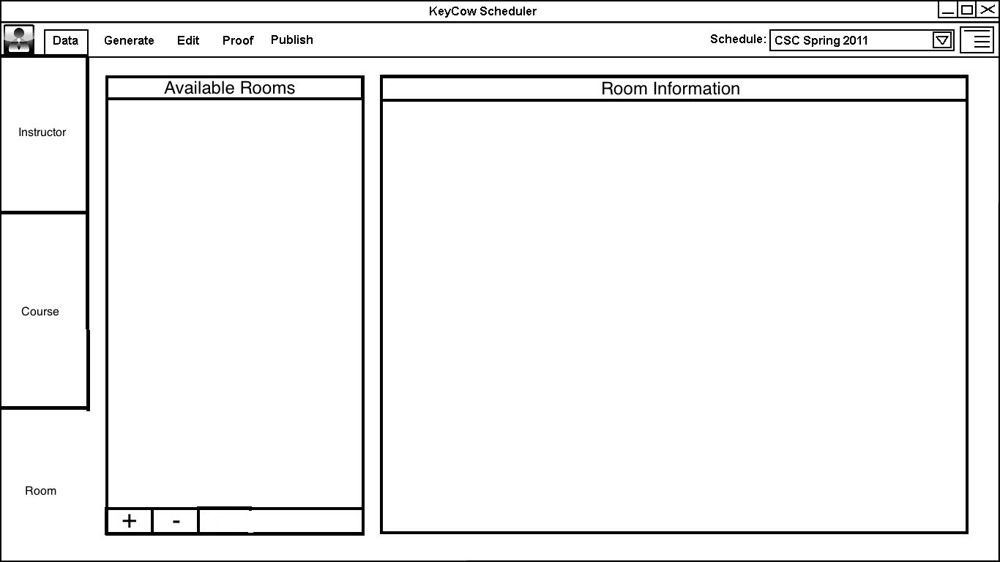
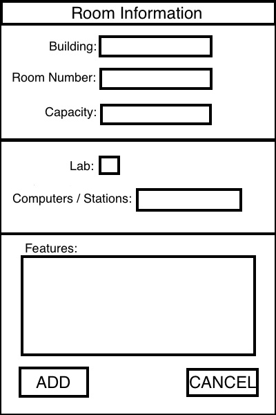
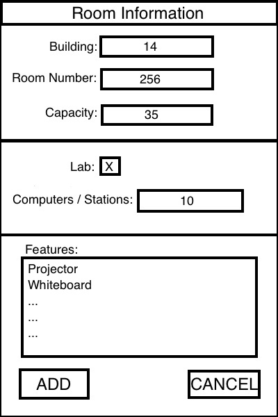
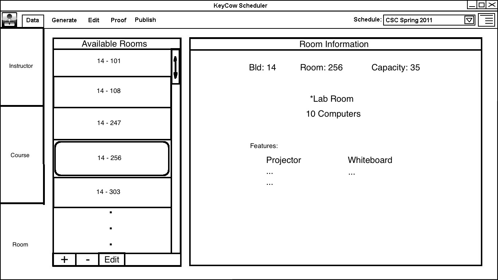

2.2.4. Add / Edit Room Preferences
The edit room preferences tab is shown with all fields empty.

The user clicks the (+) button under the Available Rooms list to open a
dialog to input the information of a new room.

The new room requires a Building Number and Room Number to be added to
the list. More options are available to distinguish the room
including: Capacity, whether the room is a lab or not, how many
computers or stations are available, and a features box where the user
can input what types of boards are in the room and whether there is a
projector, etc.

Once a room has been added to the Available Rooms list, its pertinant
information can be view by just clicking on it in the list. This
will display all the information on the right hand side of the screen
in the Room Information field.

Also, a room can be removed by clicking the (-) button under the list
or edited by clicking the (Edit) button under the list. When the
(Edit) button is clicked a dialog identical to adding the room
originally will open with the relavent information filled in so that it
can be updated.
Old versions:
version 1
{kind=link}
{kind=link}
{kind=link}
{kind=link}